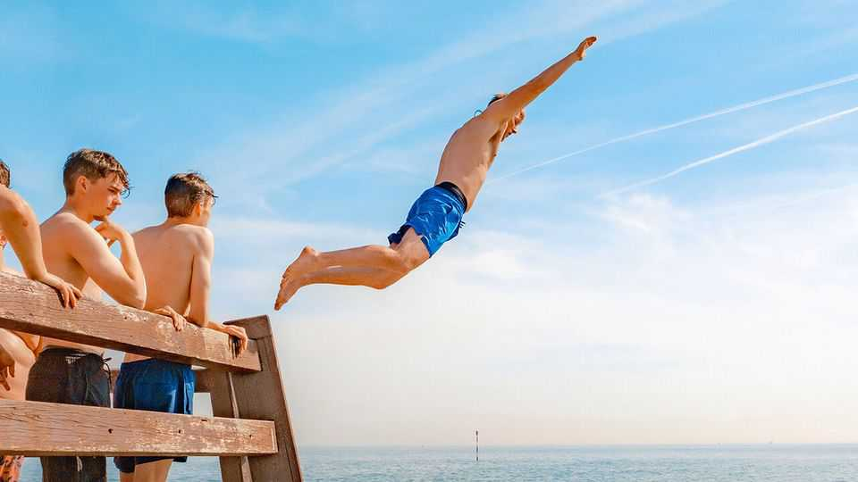

Say goodbye to summer. Not just this year’s
The season is imperilled by climate change. It was nice while it lasted

Sep 10th 2026
You tip out the sand from the suitcases and stash them in the attic. The days are shortening; children trudge unwillingly back to school. Gloaty out-of-office emails no longer dominate your inbox. In the northern hemisphere, summer is ending—and, it increasingly seems, not just this year’s summer.
For the idea of summer cherished in the West, and immortalised in songs and films, may be moribund too. The crackle of possibility on the season’s first warm day; the hazy sense, in lush midsummer, of getting away with something; the storing up of memories to revisit in bleaker times, like power in a solar battery: as the past few broiling months demonstrate, this version of summer—precious, fleeting and electric—is gravely imperilled by climate change.
The Platonic summer is a carefree interlude between responsibilities, stretching out languorously like Dustin Hoffman on his lilo in “The Graduate”. Nothing happens, then everything does. You meet new people or become someone new yourself, saying goodbye to old schools, jobs and friends and diving into the future. Life changes when you carry a watermelon to a party in the Catskills. The days seem to last for ever, as Bryan Adams crooned—and oh, those summer nights—yet the season passes in a flash.
Or it did. As the planet warms, summer is lengthening. By 2100 it will last six months in the northern hemisphere, reckons one projection. “Summer’s lease hath all too short a date,” Shakespeare lamented; soon lyricists may yearn for it to end, like Russians desperate for the thaw. “It’s been a long hot stifling summer,” a band of the future may trill. “Here comes the snow.”
Even as it stretches interminably, though, summer may get shorter, at least for some schoolchildren. Extreme temperatures are scrambling the academic calendar, forcing administrators to rejig start and finish dates. Some pupils may wind up with longer breaks in the spring and autumn, when the weather is mild enough to enjoy, and a briefer one in between. There may be less mooching around in summer, eating parents out of house and home and seeming to grow by the hour; fewer weeks to spend getting into harmless scrapes or (say) trying to make Boo Radley come out.
Vacations will evolve. For decades, British hordes have occupied stretches of southern Europe in July and August. They party in Magaluf or Mykonos, or ogle the art in Italy and Greece, discovering antiquity or (like the daring heroine of “Shirley Valentine”) the locals and themselves. Alas, it is becoming too hot to bake on Balearic beaches in high summer, or drag offspring around the Acropolis. These jaunts will drift to April or October, predicts research for the European Commission. Summertime dramas will instead unfold in Scandinavia or Wales.
The Mediterranean won’t be the only victim. Droughts, wildfires and flash floods, not to mention ticks and toxic algae, will redraw the tourist map elsewhere. Island idylls face coastal erosion and fiercer hurricanes. What happens in Vegas may still stay in Vegas, but it won’t happen outside in July. The cooler resorts of New England will be thronged; if “Jaws” were set in 2050, Amity Island would be succulently overrun.
Summer will move indoors. This will have an upside: scalding streets will deter loitering, leaving less chance of tempers flaring and tensions boiling over. But much will be lost. The time won’t be right for dancing in the street if the asphalt is melting. In Asbury Park, relates Bruce Springsteen, “the boys from the casino dance with their shirts open like Latin lovers along the shore.” In future they may huddle inside in the air-conditioning. Fire risks will restrict campfires, and thus flame-lit singalongs, spooky tales and heart-to-hearts.
Romance is sure to suffer. Summer loving has always happened fast, as Danny and Sandy attest in “Grease”, but it will have to hurry even more if the heat traps you inside till nightfall. More flesh will be covered up as people worry about skin damage. It may be too stifling under the boardwalk for canoodling.
Technology has already warped the shape of summer and sanctity of getaways, bleeding work and leisure together. The kids can still push daddy into the pool, just after he finishes his Zoom call. But the coming overhaul will be more drastic. Hallowed summer habits—music festivals and garden parties, stayaway camps and fireside s’mores—may one day be relics of a bygone age, like bathing machines and penny slots. Farewell summer. It was nice while it lasted. ■